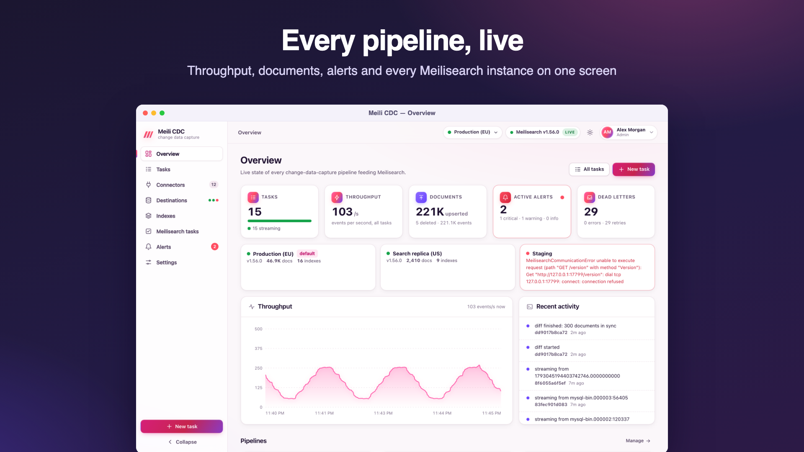

Monitoring and metrics
Watch pipelines live in the dashboard, scrape Prometheus metrics, probe health endpoints and ship structured logs.
The dashboard
The Overview page shows the tasks by state, the combined throughput (events per second across all tasks), documents written, firing alerts, dead letters, snapshot progress, each Meilisearch destination's health, and a feed of recent activity. Every page updates live; the top bar shows Live while the event stream is connected and reconnects by itself.

Live events (Server-Sent Events)
The dashboard is fed by GET /api/v1/events, a Server-Sent Events stream you can also consume yourself. It needs authentication; because EventSource cannot set headers, this endpoint also accepts the admin token as ?token=.
| Event | Data | When |
|---|---|---|
status | A task status (state, counters, lag, rate, checkpoint…) | On every change, at most about twice per second per task; one per task when the stream opens. |
log | A task log entry {"time","taskId","level","message"} | As it happens. |
task | {"id","action"} with created, updated, deleted or diff | When the task list changes or a diff finishes. |
overview | The same object as GET /api/v1/overview | When the stream opens, then every 2 seconds. |
destination.health | {"id","health"} | After each destination health check. |
alert | An alert event | When an alert fires, repeats or resolves. |
curl -N -H "Authorization: Bearer $CDC_ADMIN_TOKEN" http://127.0.0.1:8080/api/v1/events
# retry: 3000
#
# event: overview
# data: {"tasks":{"total":3,"byState":{"streaming":3}}, ...}Behind a reverse proxy, disable response buffering for this path; see Reverse proxy and TLS.
Prometheus metrics
Metrics are served at /metrics (not under /api) in the Prometheus text format. The endpoint requires authentication: use the static admin token (CDC_ADMIN_TOKEN) as a bearer token.
# prometheus.yml
scrape_configs:
- job_name: meilisearch-cdc
metrics_path: /metrics
authorization:
type: Bearer
credentials_file: /etc/prometheus/cdc-admin-token
static_configs:
- targets: ["cdc.internal:8080"]| Metric | Type | Labels | Meaning |
|---|---|---|---|
cdc_events_total | counter | task, op (upsert, delete, truncate) | Change events read from sources (snapshot rows count as upserts). |
cdc_documents_total | counter | task, kind (upserted, deleted) | Documents confirmed by Meilisearch. |
cdc_batches_total | counter | task | Batches confirmed by Meilisearch. |
cdc_batch_duration_seconds | histogram | task | Time from enqueueing a batch to its confirmation. Buckets from 10 ms doubling to about 20 s. |
cdc_errors_total | counter | task | Pipeline failures (each restart and each configuration failure). |
cdc_retries_total | counter | task | Retried Meilisearch operations. |
cdc_dlq_total | counter | task | Documents sent to the dead letter queue. |
cdc_lag_seconds | gauge | task | Delay between the source commit and the Meilisearch confirmation of the last batch. |
cdc_inflight_batches | gauge | task | Batches enqueued but not yet confirmed. |
cdc_task_running | gauge | task | 1 while the task's pipeline is active, 0 when it stopped. |
The task label is the task id. Series of a deleted task are removed. The standard Go runtime (go_*) and process (process_*) collectors are included. Counters start at zero when the service starts.
Example queries
# Documents per second, per task
sum by (task) (rate(cdc_documents_total[5m]))
# Tasks lagging more than a minute
max by (task) (cdc_lag_seconds) > 60
# 95th percentile batch confirmation time
histogram_quantile(0.95, sum by (le, task) (rate(cdc_batch_duration_seconds_bucket[5m])))
# New dead letters in the last hour
increase(cdc_dlq_total[1h]) > 0Health endpoints
| Endpoint | Auth | Response |
|---|---|---|
GET /healthz | none | ok while the HTTP server runs. Use it for liveness and readiness probes. |
GET /api/v1/health | none | {"status":"ok","meilisearch":{"status":"available","version":"…","destination":"…"}}; the status is unavailable (with error) when the default destination does not answer within 3 seconds, and unconfigured when there is no destination. |
GET /api/v1/overview | viewer | Task counts by state, total counters, rate, the default instance and every destination's health, and the registered source types. |
GET /api/v1/tasks/{id}/metrics | viewer | The task's rate, lag, upserted and deleted counts over about the last ten minutes at 2-second resolution, and its checkpoint. |
Logs
Service logs go to standard error, as text or JSON (CDC_LOG_FORMAT), at the level of CDC_LOG_LEVEL. Each task also keeps its last 1,000 activity entries in memory, visible on its Logs tab and in the log events. See Logging.
Alerts
For notifications instead of dashboards, define alert rules: task state, lag, dead letters, error bursts, stalled snapshots and Meilisearch down, delivered by email, Telegram or webhook.